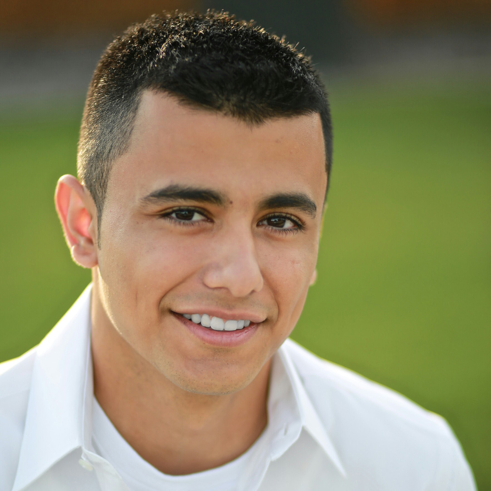

My name is Alexis and I am an aspiring Civil Engineer currently attending Washington State University in
Tri-Cities with a Junior standing. Having developed a passion for innovation, technology, and education, I
have sought to pursue my passions in my field of study as well as my personal life. Ranging from academia and
research to athletics and artistry, my ambitions to give back to my community remain intact and reinforced
through involvement, outreach and professional development primarily through music, sports and tutoring.